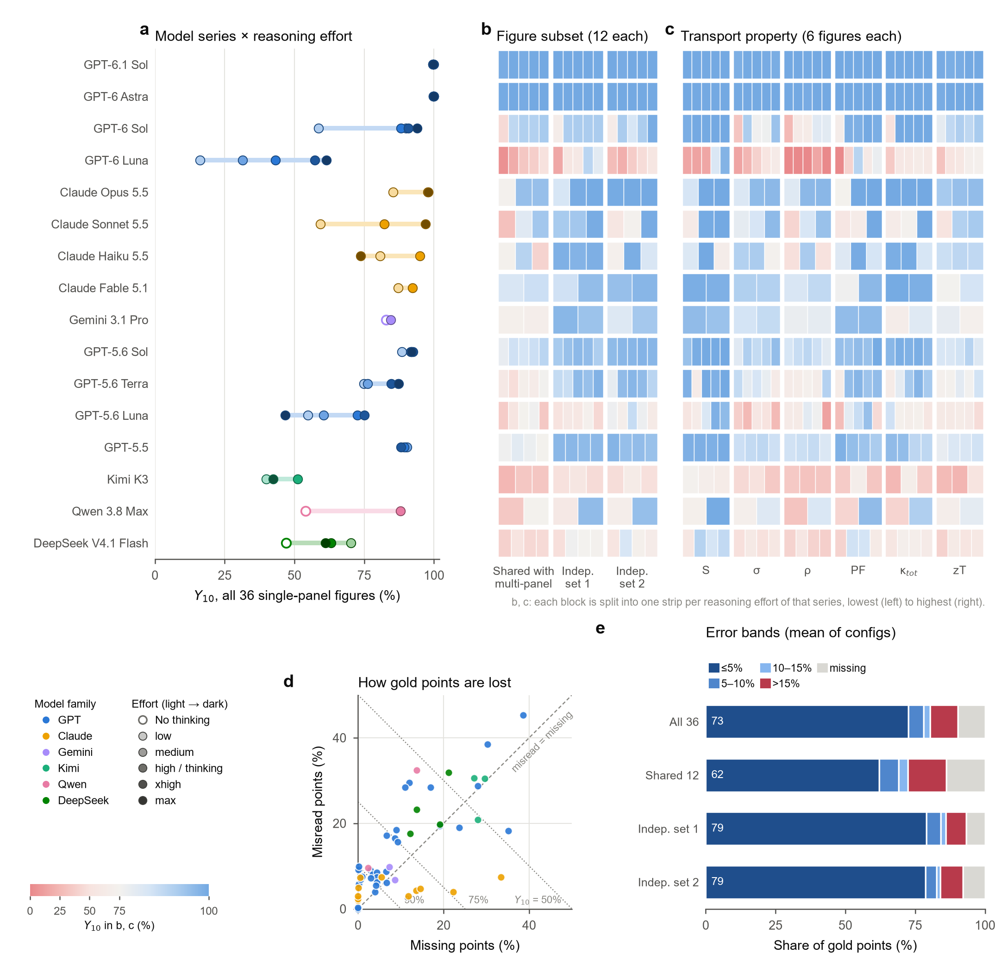
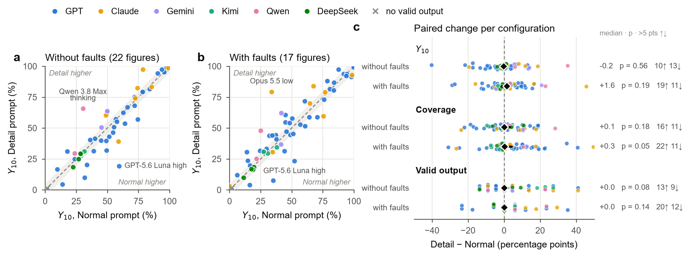
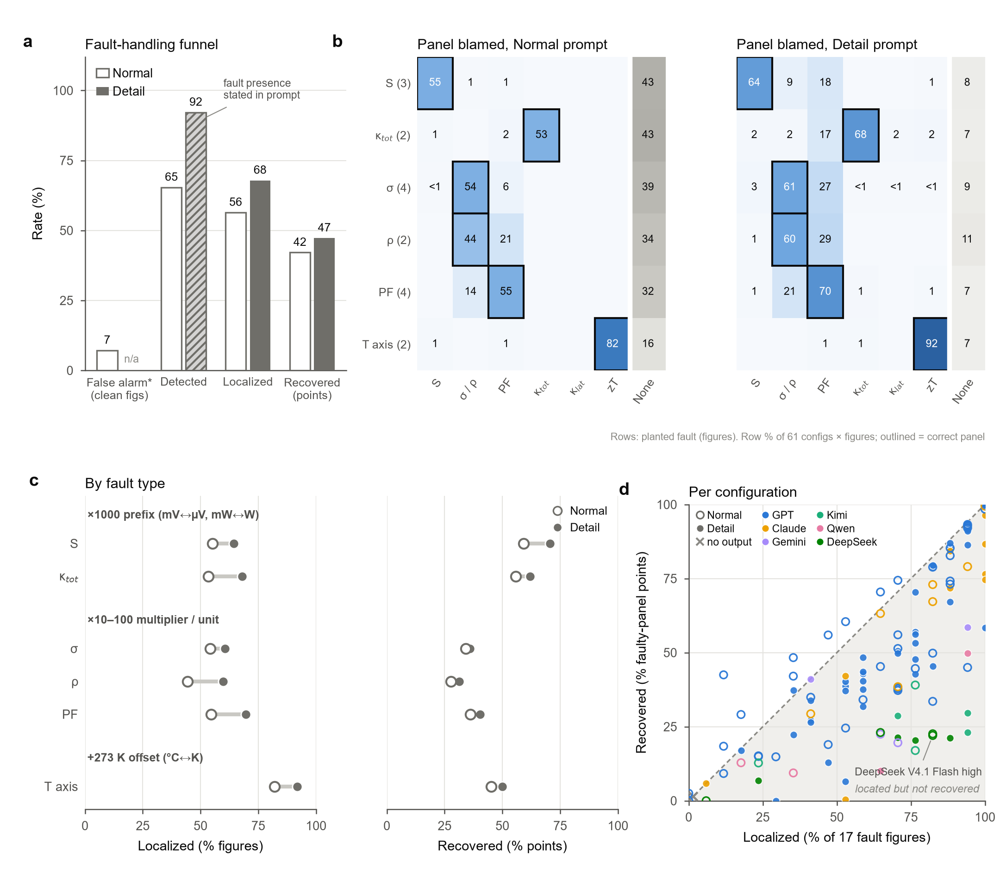
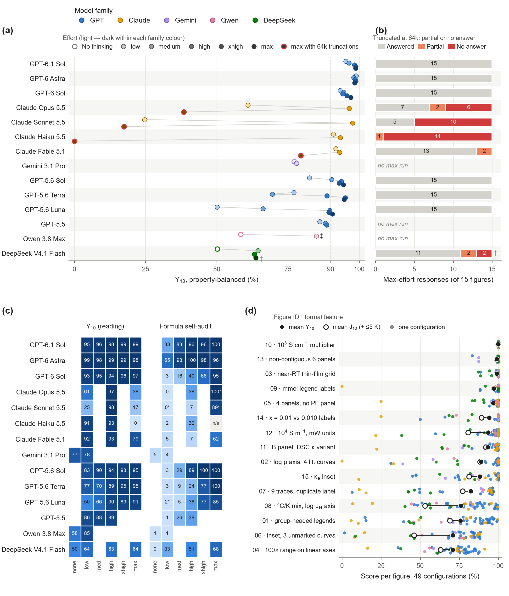
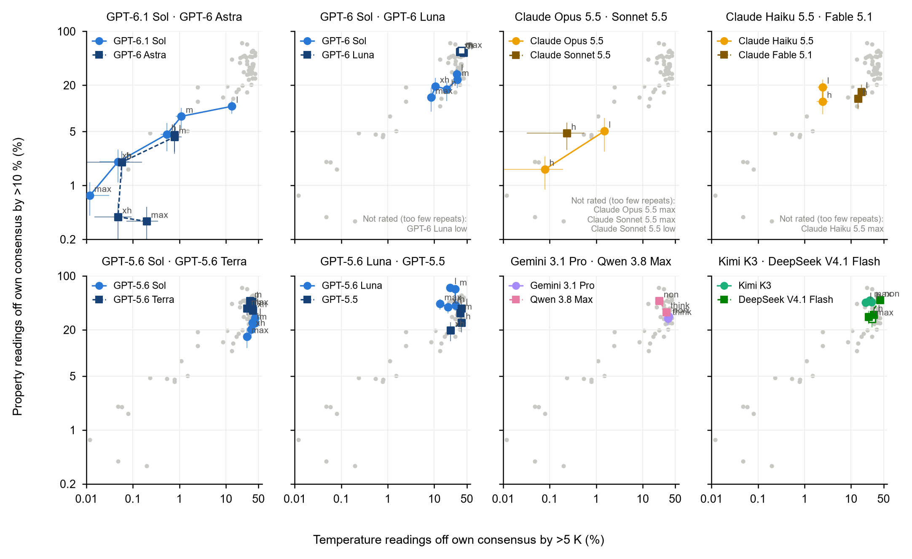

99.6–100% Y10
The best models read single plots almost without loss.
GPT-6.1 Sol and GPT-6 Astra stay at 99.6–100% at every reasoning effort, from low to max. Across all 61 configurations the mean is 78.6%, and the weakest are below 20%.
Materials data from the literature
Computed databases changed how materials are discovered. Experimental data is still locked inside papers.
A single paper reports a composition, how it was made and how it performs, spread across text, tables and figures. Many transport properties exist only as plotted curves. A reusable database needs all of this in one structured record that stays consistent with physics.
{
"record_id": "demo-0001",
"material": {
"formula": "Ag2Se0.9Te0.1",
"doping": { "element": "Te", "x": 0.10 },
"form": "polycrystalline bulk"
},
"synthesis": {
"method": "melting + spark plasma sintering",
"steps": [
{ "step": "melt", "T_K": 1273, "time_h": 12 },
{ "step": "SPS", "T_K": 723, "pressure_MPa": 50 }
],
"relative_density": 0.975
},
"crystal_structure": {
"system": "orthorhombic", "space_group": "P2_12_12_1",
"lattice_A": { "a": 4.33, "b": 7.06, "c": 7.76 },
"coordination": [
{ "site": "Ag1", "polyhedron": "AgSe4 tetrahedron", "CN": 4 },
{ "site": "Ag2", "polyhedron": "AgSe3 triangle", "CN": 3 }
],
"bonding": "mixed ionic-covalent Ag-Se; weak, anharmonic Ag bonds"
},
"electronic_structure": {
"band_gap_eV": 0.12, "gap_type": "direct", "carrier_type": "n",
"cb_valley_degeneracy": 1, "m_eff_me": 0.21
},
"phonons": {
"debye_temperature_K": 165, "sound_velocity_m_s": 1510, "gruneisen": 2.1,
"low_lying_optical_THz": 1.0,
"key_feature": "soft Ag modes scatter heat-carrying acoustic phonons"
},
"plot_records": [
{ "quantity_id": "seebeck_coefficient", "y_unit": "V/K",
"x_values": [300, 350, 400], "y_values": [-1.20e-4, -1.31e-4, -1.40e-4] },
{ "quantity_id": "electrical_conductivity", "y_unit": "S/m",
"x_values": [300, 350, 400], "y_values": [1.00e5, 0.92e5, 0.85e5] },
{ "quantity_id": "thermal_conductivity", "y_unit": "W/(m K)",
"x_values": [300, 350, 400], "y_values": [0.80, 0.78, 0.76] },
{ "quantity_id": "dimensionless_figure_of_merit", "y_unit": "1",
"x_values": [300, 350, 400], "y_values": [0.54, 0.71, 0.88] }
],
"verification": [
{ "relation_id": "zt_from_s_sigma_kappa", "shared_point_count": 3,
"max_relative_deviation": 0.004, "verdict": "consistent" }
],
"provenance": {
"doi": "10.0000/demo", "figure": "Fig. 3", "panels": ["a", "b", "c", "d"]
}
}Scroll inside the record to see every block. Illustrative record, not real data. The plot_records and verification blocks follow the TE-PlotBench output schema.
Thermoelectric figure-extraction benchmark
Can multimodal AI turn a scientific figure into data you can put in a database?
We tested 61 model configurations on thermoelectric figures with known source data. Each test asks the model to recover the numbers, keep every curve tied to the right sample and unit, and check the physics that links related panels.
01 · Key findings
Can models read the points? Can they reason about units across panels? What does it take to deploy them on real papers? Every number comes from the 18 November 2026 data. Y10 = share of all gold points recovered within 10% of the true value; missing points count as failures.
GPT-6.1 Sol and GPT-6 Astra stay at 99.6–100% at every reasoning effort, from low to max. Across all 61 configurations the mean is 78.6%, and the weakest are below 20%.
Mean Y10 drops from 69% to 52% on identical source curves, and missing points double. GPT-6 Astra (high to max) and Claude Opus 5.5 high lose under 1 point.
With a 64k output cap, Claude Opus, Sonnet and Haiku 5.5 at max effort ran out of tokens on every multi-panel figure, even though their high-effort runs reached 79–99%.
With a neutral prompt, models flag 65% of faults, name the right panel in 56% and repair 42% of the faulty points. When the prompt says a fault exists, detection rises to 92% but repair rises only to 47%.
A 1000× prefix slip on the Seebeck coefficient (mV vs μV) looks unphysical, and 59–71% of the affected points are repaired. A 10× error on σ, ρ or PF stays in a believable range, so only 28–40% are repaired.
In a three-panel S | ρ | PF figure, a 10× PF fault was blamed on ρ by 30 of 61 configurations. In the six-panel figure, where PF also enters zT = PF·T/κ, no configuration blamed the wrong panel.
Scored against publisher source data, GPT-6 Astra and GPT-6.1 Sol reach 95–99% Y10 even at low effort. Remaining errors cluster in five figure formats: compressed linear ranges, insets, unmarked curves, mixed °C/K axes and duplicate legend labels.
From low to max effort, GPT-6.1 Sol's reading accuracy changes by about 3.5 points, but its exact formula checks (PF = S²σ, zT) go from 33% to 100% correct. Low-effort models often give a plausible verdict backed by wrong arithmetic.
GPT-6.1 Sol low reaches 99.6% single-panel Y10 for about $0.03 per figure. GPT-6 Astra max costs about 25× more ($0.74) for +0.3 points. Claude Haiku 5.5 high reaches 95% for $0.004.
02 · How it works
We render figures from laboratory measurements whose numbers we keep, so every extracted point can be scored exactly. Then we change one thing at a time: the layout, the units, a planted fault or the prompt. A final track uses published figures with publisher-deposited source data.
TRACK 1
Can the model read one plot?
36 figures · 204 curves · 2,988 points
TRACK 2
Can it keep related panels consistent?
39 figures × 2 prompts · 13,536 points
TRACK 3
Does it work on real papers?
15 figures · 85 series · 3,279 points
The same samples appear in several panels, and their properties are linked by equations. A correct record must satisfy them, so an extraction error can be caught by checking the panels against each other.
Scores use a fixed denominator of all gold points, so a model cannot score well by returning only the easy ones.
CCoverage: share of gold points the model returned and we could matchY10Share of gold points within 10% of the true value (Y5 and Y15 are also reported)J10Y10 with the temperature also within 5 KFaultsDetected → correct panel localized → faulty points recovered03 · Evidence
Two interactive views, then the full manuscript figures. Hover or tap a point for details. Colour shows the model family.
Each dot is one configuration. Below the diagonal means the model loses accuracy when the curves move into a multi-panel figure.
All 61 configurations × 17 fault figures. The detailed prompt tells the model that a fault exists, so its detection rate measures instruction-following.
Share of faulty-panel points recovered. Thick bar: neutral prompt. Thin bar: detailed prompt.

FIGURE 1 · SINGLE PANEL

FIGURE 2 · MULTI-PANEL

FIGURE 3 · PROMPTS
Across configurations, the median paired change in Y10 is −0.2 points on clean figures and +1.6 on faulty ones, and neither is statistically significant. Individual models move a lot in both directions. Qwen 3.8 Max (thinking) and Claude Opus 5.5 low gain strongly, while GPT-5.6 Luna high loses. Test prompts for each model rather than assuming more instructions help.
Open full size ↗
FIGURE 4 · UNIT FAULTS

FIGURE 5 · PUBLISHED FIGURES (DRAFT)

ROBUSTNESS · REPEATED READINGS
The same 564 gold points recur in 24–80 separate questions. GPT-6.1 Sol max, GPT-6 Astra max/xhigh and Claude Opus 5.5 high reproduce more than 98% of readings. The median configuration reproduces only 41%. Most temperature disagreements come from rounding readings onto a 5 K grid, which real measurement temperatures never follow.
Open full size ↗04 · In practice
Four recommendations for anyone automating literature data extraction.
Low or medium effort already reaches the reading ceiling for the best models, at a fraction of the cost. Max effort adds little and risks truncation under fixed output caps.
Recompute PF = S²σ and zT = PF·T/κ yourself, at shared temperatures, from the extracted points. Model verdicts can look right while the arithmetic behind them is wrong.
Order-of-magnitude-one errors look plausible and are most often missed or blamed on the wrong panel. Flag them for review, especially in three-panel figures with only one linking equation.
A six-panel figure means serialising 30 curves. Set output caps with headroom, and treat empty or partial responses as failures to retry, never as zeros to average in.